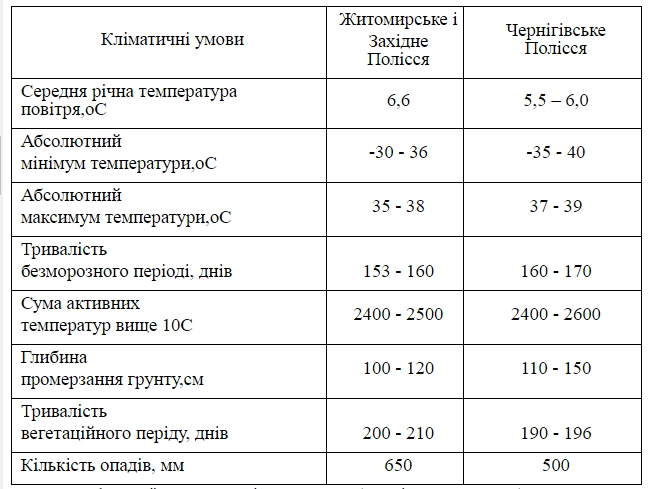

Загальна характеристика кліматичних умов Українського Полісся.


Рельєф Українського Полісся являє собою рівнину. Правобережна частина Українського Полісся має загальний нахил топографічної поверхні з півдня на північ і північний схід від Прип’яті до Дністра, а лівобережна – на південний захід до долони Дніпра. За даними О.М. Маринича (1968), у сучасному рельєфі Полісся найхарактернішими є річкові долини, зандрові, морено-зандрові і моренні рівнини.
Підвищення спостерігається у північно-західній частині Житомирського Полісся, де на значній площі висоти досягають 300 – 320 м. Це Словечансько-Овруцький кряж, що простягнувся більше як на 50 км зі сходу на захід, досягає в ширину 17 – 20 км (в середньому 10 – 15 км.). Цей кряж порушує типовий низинний характер рельєфу північної частини Полісся.
Однією з характерних ознак поліської території є значна обводненість, що зумовлено кліматичними умовами та рельєфом. Середня густота річкової сітки в межах Українського Полісся становить 0,29 км. Найбільші річки Українського Полісся - Дніпро, Десна, Прип’ять, Горинь, Стир, Тетерів, Уборть, Уж, Снов, Остер.
У межах Українського Полісся протікає близько 700 річок, які мають довжину понад 10 км. Високий рівень господарського освоєння водозбірних басейнів спричиняє порушення рівноваги природного ландшафту, умов формування стоку, погіршення якості води. На режим річок Українського Полісся значний вплив мають болота. Вони акумулюють вологу, затримують весняний спад води, а в посушливі періоди випаровують багато води і тому мають від’ємний вплив на живлення річок. Заболочення території досить велика – 1,8 млн.га. У західних районах Полісся заболочені землі становить 15%, у північних - 40%, У Київському та Чернігівському Поліссі 4,5% загальної площі.
Характерними рисами природних умов Полісся є низинний рельєф з широкими заболоченими долинами, високий рівень підгрунтових вод, позитивний баланс вологи, панування дерново-підзолисих і болотних грунтів, значне поширення соснових лісів з домішкою широколистяних порід. Особливо сильно заболочена її північно-західна частина. Площа торф’яних боліт Полісся становить 529,4 тис.га. Широкому розвитку процесів заболочування на Поліссі сприяють приплив річкових вод з навколишніх височин, позитивний баланс вологи, рівнниність і незначне дренування повехні, не глибоке залягання водонепроникних порід та великі весняні розливи річок.
Грунти Полісся сформувалися переважно на безкарбонатних піщаних та супіщаних відкладах в умовах значного зволоження під змішаними лісами. За ступенем кислотності їх поділяють на три групи: сильнокислі – рН 4,5 і нижче; кислі рН 4,6 – 5,5; слабокислі рН 5,6 – 6. Зональним типом грунтів є дерново-підзолисті та болотні, що займають значні площі. Крім того тут зустрічаються дерново-карбонатні, сірі лісові та злегка опідзолені чорноземи. Дерново-підзолисті грунти утворилися під пологом хвойних та мішаних лісів з трав’янистою рослинністю на водно-льодовикових, моренних і лесовидних відкладах. Тому підзолистий процес тут відбувається з одночасним нагромадженням гумусу, що дає можливість чітко визначити грунтові горизонти: гумусно-елювіальний (18-25 см), елювіальний та ілювіальний.
Вся територія Українського Полісся належить до зони змішаних лісів Східно-Європейської рівнини, в усіх чатинах неоднорідна. Ця неодорідність проявляється в геологічній будові та рельєфі, кліматичних умовах, строкатості грунтового та рослинного покривів. Внаслідок тісного взаємозв’язку цих компонентів формуються природні комплекси (ландшафти), що характеризуються загальними рисами і на даній території відокремлюються в окремі ділянки з певними фізико-географічними